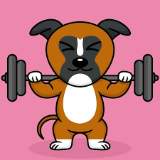
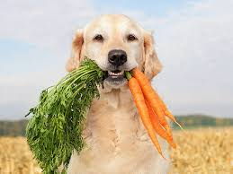

The importance of your pet's health, Nigeria
Regular exercise is crucial for your pet's physical and mental well-being. Just like humans, animals need to move their bodies and burn off excess energy to maintain good health. Without sufficient exercise, pets can develop various health issues, including obesity, heart disease, joint problems, and behavioral issues.
To keep your pet healthy and happy, make sure to provide them with plenty of opportunities for exercise. Take them for daily walks, play fetch or tug-of-war, set up obstacle courses or agility training, or take them to a dog park to socialize and run around. For indoor pets, consider using interactive toys, such as puzzle feeders or laser pointers, to encourage movement and mental stimulation.
Remember, each pet has unique exercise needs based on their age, breed, and health status, so consult with your veterinarian to determine the best exercise plan for your furry friend. By making exercise a regular part of your pet's routine, you can help them live a long and healthy life.
Animal Nutrition: The Key to Healthy and Happy Animals
Just like humans, animals need proper nutrition to stay healthy and thrive. Nutrition is the process by which animals obtain food and use it for growth, maintenance, and repair of body tissues. A balanced diet that provides all the necessary nutrients is essential for maintaining optimal health and wellbeing in animals.
Types of Nutrients
There are six main types of nutrients that animals need to consume:
- Proteins
- Carbohydrates
- Fats
- Vitamins
- Minerals
- Water
Each of these nutrients plays a vital role in maintaining the health and wellbeing of animals. Proteins are important for growth and repair of body tissues, while carbohydrates and fats provide energy. Vitamins and minerals are essential for proper functioning of the body's systems, and water is necessary for hydration and bodily functions.
Different Diets for Different Animals
Not all animals have the same dietary requirements. For example, herbivores (animals that eat plants) have different nutrient needs than carnivores (animals that eat meat). Omnivores (animals that eat both plants and meat) have different needs as well. Additionally, different species of animals may have different requirements depending on their size, age, and activity level.
Balancing a Diet
Providing animals with a balanced diet that meets their specific needs is essential for maintaining their health and wellbeing. This can be achieved by feeding them a variety of foods that contain all the necessary nutrients in the right amounts. For example, a balanced diet for a dog might include a combination of protein-rich meats, carbohydrates from vegetables and grains, healthy fats from fish or oils, and essential vitamins and minerals.
The Importance of Water
Water is perhaps the most important nutrient for animals. It is necessary for maintaining proper bodily functions and hydration. Providing animals with access to clean, fresh water is essential for their health and wellbeing.
In Conclusion
Proper nutrition is essential for maintaining the health and wellbeing of animals. A balanced diet that provides all the necessary nutrients is crucial, and different animals have different requirements. By understanding the dietary needs of animals, we can help ensure that they are healthy and happy.
Animal First Aid: Knowing What to Do in Emergencies
As pet owners, it's important to be prepared for emergencies and know what to do if your animal is injured or sick. Animal first aid is the initial care given to an animal before professional medical help is obtained. Knowing basic first aid skills can help you keep your animal safe and prevent further injury or illness.

Common Emergencies and First Aid
Some common emergencies that animals may experience include:
- Choking or difficulty breathing
- Seizures
- Bleeding
- Poisoning
- Fractures or other injuries
For each emergency, there are different steps you can take to provide first aid. For example, if your animal is choking, you may need to perform the Heimlich maneuver. If your animal is bleeding, you'll need to apply pressure to the wound and get them to a vet as soon as possible. It's important to research and learn about first aid for these common emergencies, so you're prepared in case of an emergency.
First Aid Kit Essentials
Having a well-stocked first aid kit can help you respond to emergencies quickly and efficiently. Some essential items to include in your animal first aid kit are:
- Gauze and adhesive tape
- Scissors
- Antibacterial ointment
- Hydrogen peroxide or saline solution
- Tweezers
- Instant cold pack
- Thermometer
- Emergency blanket
- Disposable gloves
Make sure to check your first aid kit regularly to ensure that all items are up-to-date and in good condition.
When to Seek Professional Help
While animal first aid can help you provide initial care for your animal, it's important to seek professional medical help as soon as possible. If your animal is seriously injured or showing signs of a serious illness, take them to a vet immediately. Remember, animal first aid is only meant to provide temporary relief until professional medical help can be obtained.
In Conclusion
Animal first aid is an important skill for pet owners to have. By knowing what to do in emergencies and having a well-stocked first aid kit, you can provide initial care for your animal and prevent further injury or illness. Remember, seeking professional medical help is essential for your animal's health and wellbeing.